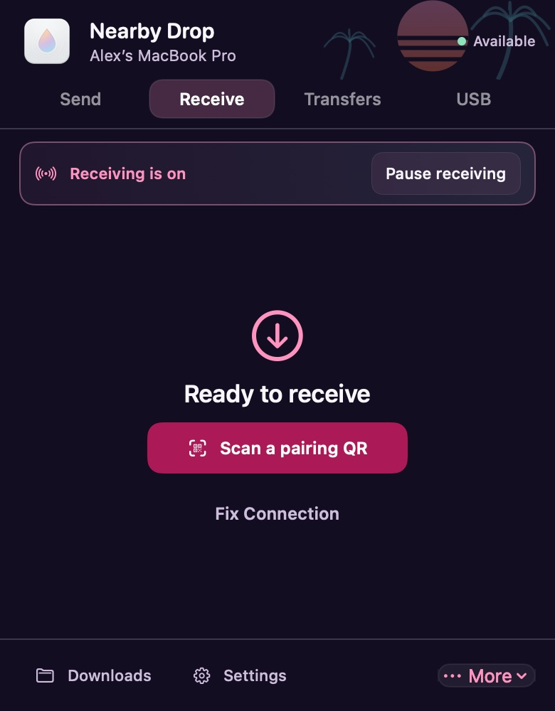
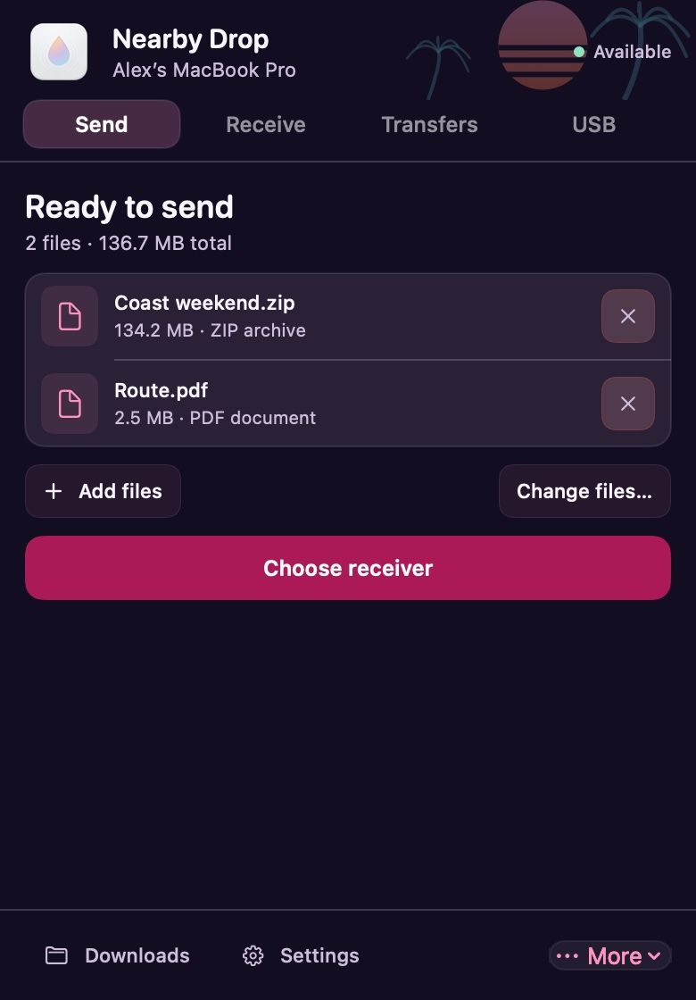
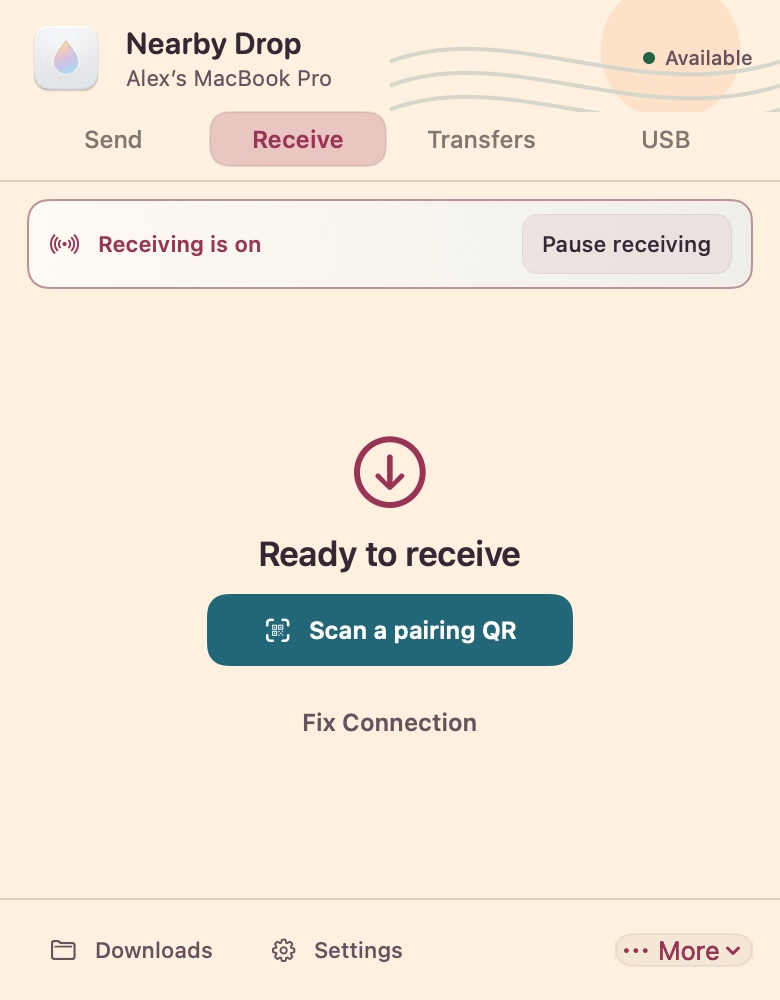
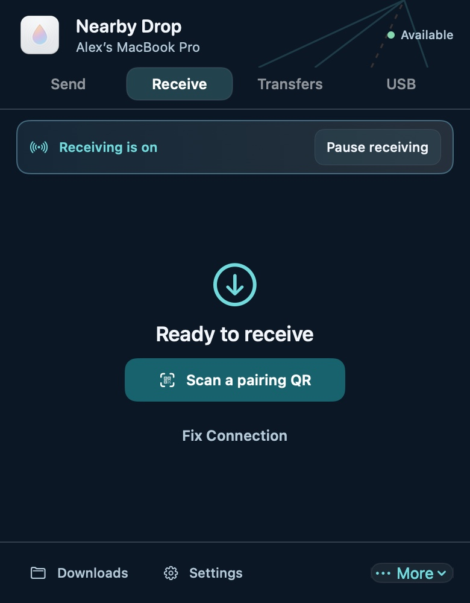

Vice Nights
Sunset pink, ocean cyan and after-dark palms.

Compatible Quick Share transfers and Android USB file management in a native Mac menu bar app. The next candidate adds original tropical appearances and practical recovery tools.
This page previews unreleased work. The download below is the current public stable version; it does not promise these candidate features.
Get the public stable appmacOS 14+ · Apple silicon and Intel binary support · compatibility depends on client and network

Sunset pink, ocean cyan and after-dark palms.

Warm cream and tropical teal for a lighter start.

Navy surfaces, clear cyan signals and warm amber.

Local observations and honest next steps. It cannot inspect the phone's Quick Share settings.
Prepare text or links as UTF-8 files, or review a screenshot before choosing its receiver.
Filter and sort the loaded folder. No unsupported phone-wide search or automatic wireless failover.
Favorite recipients are local name/type hints, not authenticated identities. Incoming approval and transfer safety remain. The 128-file wireless limit stays in place; large-batch execution is experimental and disabled.
Expanded operational diagnostics are prepared behind a disabled rollout gate plus separate consent. No new live collection or public deployment is activated by this preview.
Read the candidate help · Review signing and verification gates